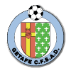
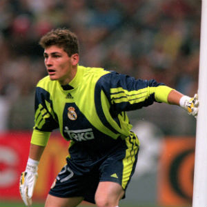

Titulo de la Sección
Iker Casillas Fernández (Madrid, 20 de mayo de 1981) es un futbolista español que juega como guardameta en el F.C. Porto de la Primeira Liga de Portugal. Es internacional absoluto (2000) y capitán (2006), de la selección española de fútbol, de la que es el jugador con más internacionalidades5 y con la que se ha proclamado bicampeón de Europa en 2008 y 2012, y campeón del mundo en 2010, logrando un «triplete de selecciones»
